ШІ-чат на власному ключі
Claude, ChatGPT, Gemini, Groq або локальна модель. Додайте скріншот, PDF чи Word і питайте. Ключ зашифровано на вашому ПК.
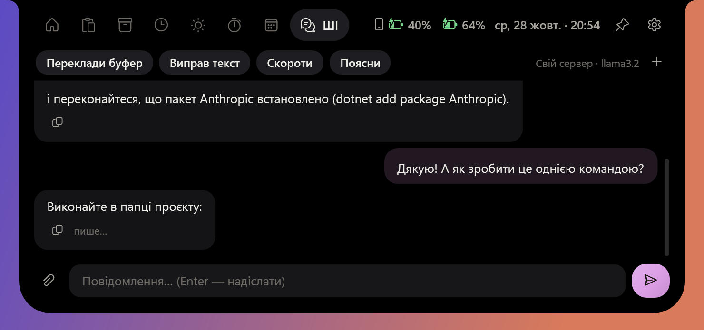
Музика з караоке, дзвінки й коди з телефона, запис екрана, календар, погода й ШІ-чат у маленькому острові вгорі екрана. Наведіть мишку, і він розкриється.
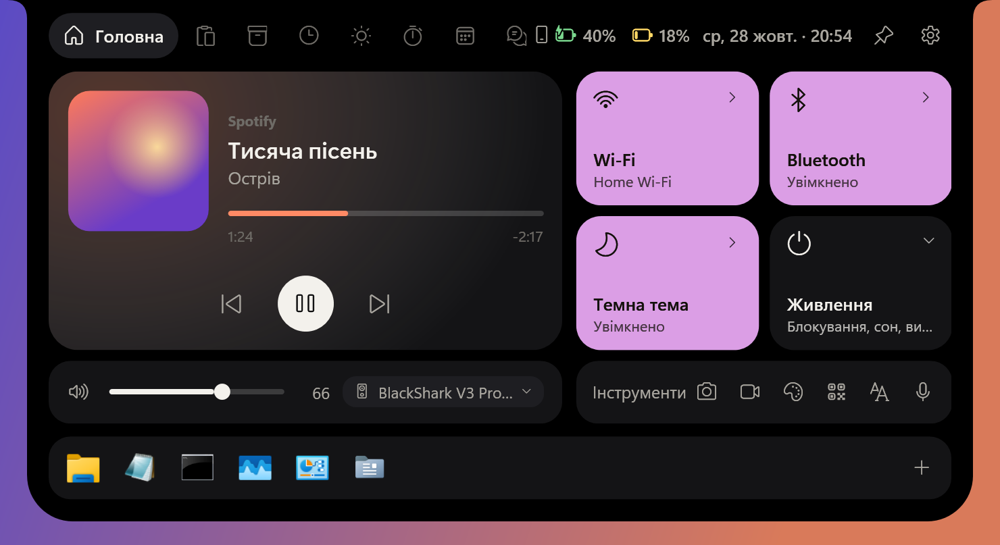
У спокої острів стає маленькою пігулкою: трек і рядок пісні, що звучить зараз, найближча нарада, таймер, час на задачу чи запис екрана. Нічого не відбувається? У ньому живе персонаж, який стежить за курсором і танцює під музику.
Розгорніть острів, і в ньому вкладки для щоденних дрібниць. Без браузера, без пошуку потрібної програми.
Claude, ChatGPT, Gemini, Groq або локальна модель. Додайте скріншот, PDF чи Word і питайте. Ключ зашифровано на вашому ПК.

Google та Outlook. За 5 хвилин до наради нагадає й дасть кнопку Meet, Teams чи Zoom.
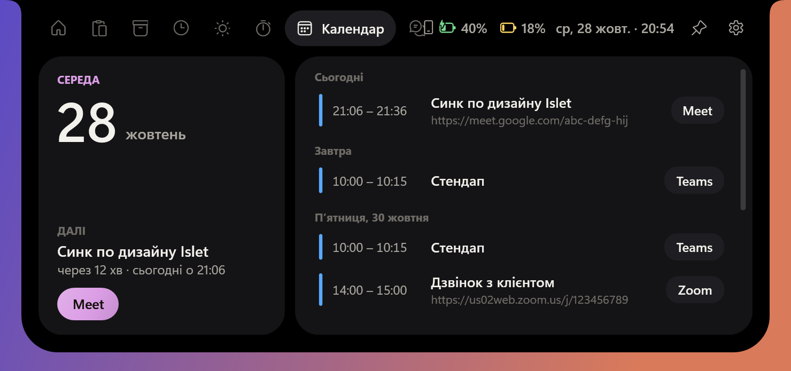
Spotify, YouTube в браузері чи будь-який плеєр: текст пісні прокручується в такт, рядок, що звучить, підсвічено.
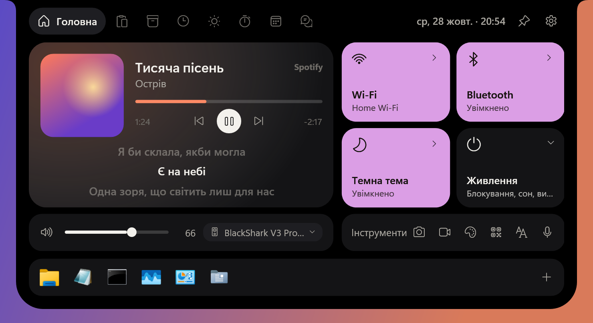
Область чи весь екран у MP4, HEVC або WMV, зі звуком комп'ютера чи мікрофона. Клік по пігулці зупиняє запис, а сам острів у відео не потрапляє.
Живе небо, прогноз на день і тиждень, попередження про дощ.
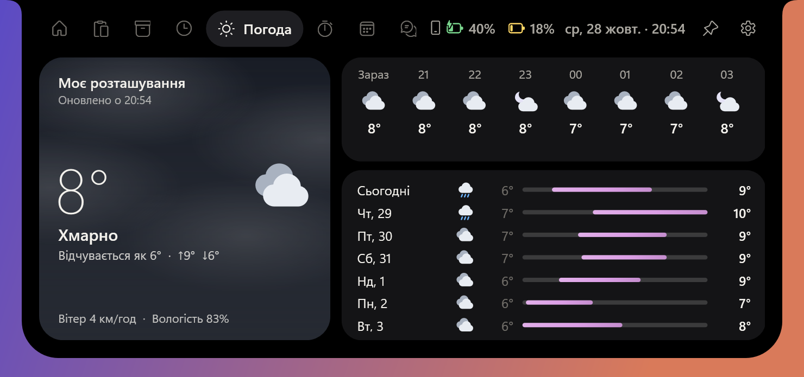
Скільки годин пішло на роботу чи навчання. Звіт за тиждень і експорт у Excel.
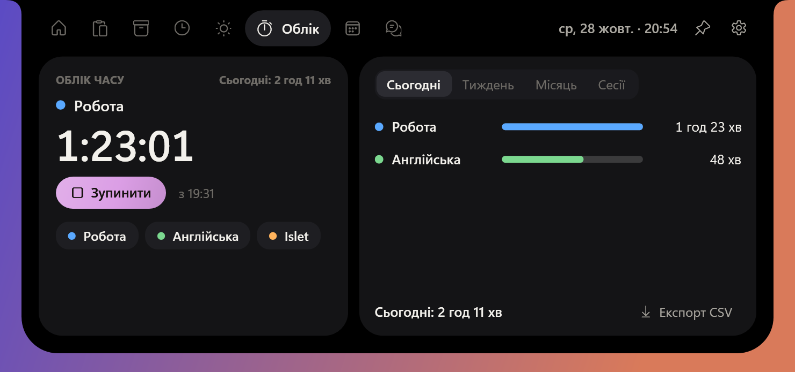
Історія скопійованого з пошуком. Клік вставляє запис туди, де ви друкували.
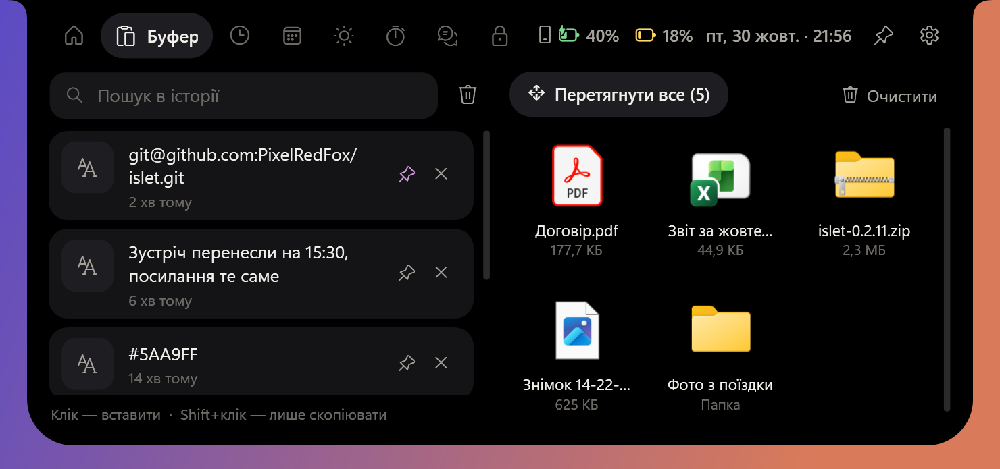
Нотатки з чеклістами, таймер і нагадування звичайними словами: «нагадай завтра о 9».
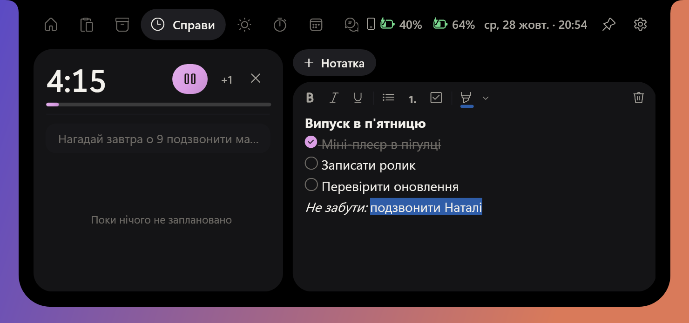
Ctrl+Shift+Space, скажіть, ще раз Ctrl+Shift+Space: текст з'явиться там, де курсор. Розпізнавання на вашому ПК або в хмарі.
На місці плеєра погода, нотатки, календар, буфер чи полиця. Що саме, вирішуєте ви.
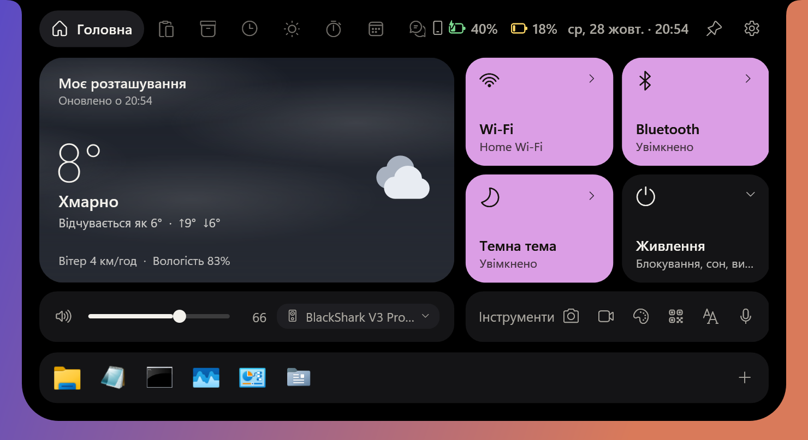
Унизу «Головної» — ваші програми, папки й файли: один клік відкриває їх. Поки щось завантажується з Chrome, Edge, Firefox чи Steam, на цьому місці видно файл, швидкість і скільки лишилось. Можна показувати завантаження під ярликами або зовсім без ярликів.
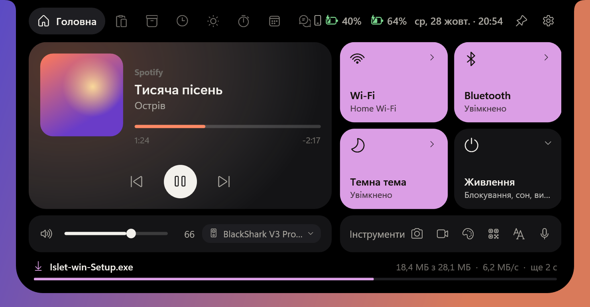
Telegram, пошта й інші програми показують сповіщення в острові, а не в кутку екрана. Можна залишити й звичні сповіщення Windows.
Islet працює разом із програмою Windows «Зв'язок зі смартфоном» для Android та iPhone.
Програми, файли, калькулятор і курси валют НБУ. Нагадування й таймери пишіть звичайними словами.
нагадай завтра о 9 подзвонити мамі
таймер 10 хв
100 usd
(1250+380)*1,2
? як перекласти «дедлайн»
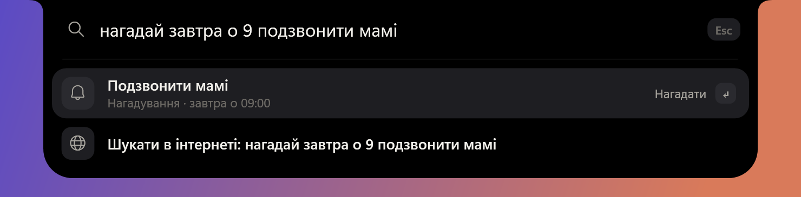
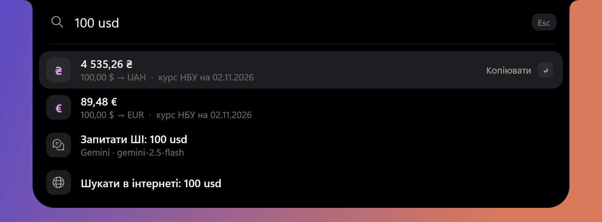
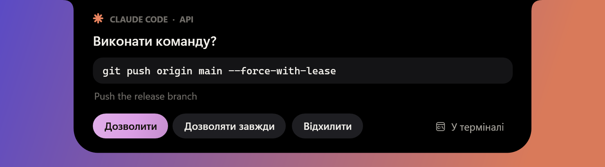
Острів показує, що зараз робить агент. Коли він просить дозволу чи ставить питання, відповідайте прямо з острова, не перемикаючись у термінал.
Нотатки, історія й налаштування лишаються на вашому ПК.
Не забирає фокус і ховається в іграх та повноекранних програмах.
На основному екрані, на обраному або там, де курсор.
Нова версія завантажується у фоні й ставиться після перезапуску.
Угорі, внизу, ліворуч чи праворуч, зі зсувом від центру й під панеллю завдань.
Іде за край екрана і повертається, коли затримати курсор біля краю, з потрібною вам затримкою.
Колір акценту з Windows або свій. Кольори плеєра беруться з обкладинки.
Скріншот, запис екрана, текст з екрана, буфер. Кожну клавішу можна змінити.
Islet безкоштовний і без реклами. Якщо острів став вам у пригоді, підтримайте розробку внеском у банку monobank: це допомагає частіше випускати нові можливості.
Наведіть камеру телефона на QR-код або натисніть на нього.
Безкоштовно. Для Windows 10 (версія 2004 і новіші) та Windows 11.
Завантажити для Windows